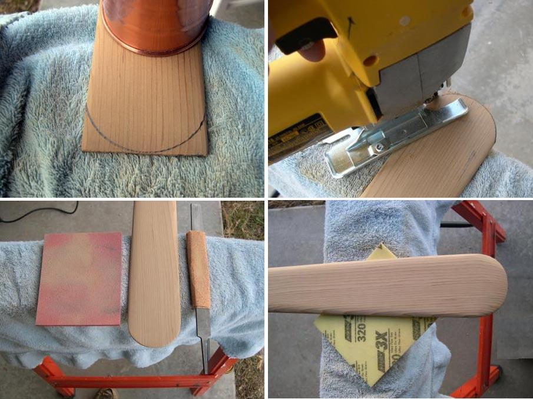

| Greenland Paddle Construction | Menu Previous Page Next Page |
|
 Draw the rounded tips using any circular object that has the correct diameter. In this case, a copper cup is used. After marking the half circle, use a jig saw with smooth cutting blade to cut the tip. After cutting, use a wood file and sandpaper to smooth out the tip. Next thin the tip with a sanding block and 150 grit paper to between 1/8" and 3/16". Final rounding of the tip is done with a sanding pad. The paddle is now ready to be oil finished.
|
|